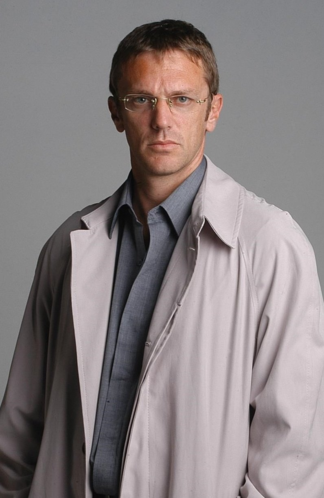
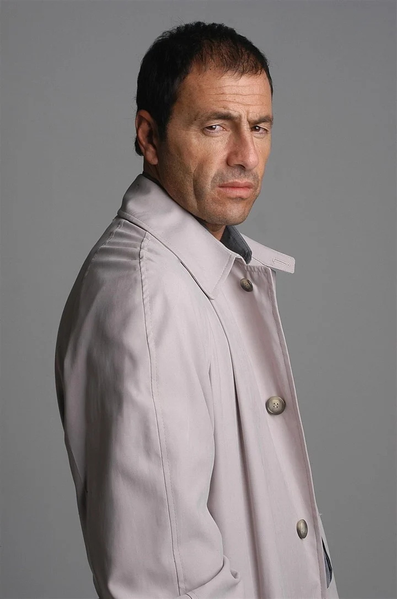

Principales
Mario Santos
Federico D'Elía como Mario Santos es el líder del grupo de especialistas conocido como "Los Simuladores." Es un personaje carismático, astuto y extremadamente inteligente. Mario es el estratega principal del equipo y se destaca por su habilidad para idear soluciones creativas y poco convencionales para los problemas que enfrentan sus clientes. Es un hombre de pocas palabras y un pensador rápido, lo que lo convierte en el cerebro detrás de las operaciones del grupo. Siempre mantiene la calma bajo presión y está dispuesto a asumir riesgos para garantizar el éxito de las misiones de Los Simuladores. Mario Santos es un personaje central en la serie y aporta un toque de ingenio y humor a cada episodio. Su personalidad enigmática y su capacidad para resolver problemas de manera creativa son atributos que lo hacen querido por los fanáticos de la serie. A lo largo de la trama, su liderazgo es fundamental para el éxito del equipo en la resolución de problemas de sus clientes.
Emilio Ravenna
Diego Peretti como Emilio Ravenna es uno de los miembros destacados del equipo de "Los Simuladores." Es un experto en informática y tecnología, lo que lo convierte en el encargado de resolver problemas tecnológicos y de sistemas en las misiones del equipo. Emilio es conocido por su inteligencia y habilidades técnicas excepcionales. Es capaz de manipular sistemas informáticos, hackear dispositivos y crear tecnología especializada para ayudar a Los Simuladores a llevar a cabo sus misiones de manera exitosa. Su experiencia en tecnología es una parte fundamental de la capacidad del equipo para simular y resolver problemas de manera efectiva. A lo largo de la serie, Emilio aporta una dosis de humor y sofisticación al equipo. Su personalidad es equilibrada y suele mantener la calma en situaciones de alto estrés. Es un recurso valioso para el equipo y juega un papel clave en el éxito de sus misiones, especialmente cuando se trata de sortear obstáculos tecnológicos. Emilio Ravenna es un personaje apreciado en la serie por su capacidad para aportar soluciones técnicas ingeniosas y por su contribución a la dinámica del equipo de "Los Simuladores."
Gabriel Medina
Martín Seefeld como Gabriel Medina es un miembro destacado del equipo de "Los Simuladores." Se destaca como el negociador del grupo, encargado de resolver conflictos y situaciones delicadas en las misiones. Gabriel es un personaje carismático, seguro de sí mismo y extremadamente persuasivo. Su habilidad para negociar y convencer a las personas es esencial para el éxito de las operaciones del equipo. En situaciones de alta tensión o con clientes difíciles, Gabriel utiliza su carisma y astucia para lograr los objetivos del grupo. A lo largo de la serie, Gabriel se convierte en el experto en relaciones humanas del equipo, resolviendo disputas, calmando tensiones y persuadiendo a terceros para lograr los resultados deseados. Su capacidad para pensar rápido y encontrar soluciones a menudo inusuales es fundamental en la resolución de problemas en las misiones. Gabriel Medina es un personaje apreciado en la serie por su habilidad para aportar un toque de humor y su capacidad para lidiar con situaciones complejas. Su personalidad enérgica y su destreza como negociador son una parte esencial de la dinámica del equipo de "Los Simuladores."
Pablo Lampone
Alejandro Fiore como Pablo Lamponne es uno de los miembros clave del equipo de "Los Simuladores." Es un personaje carismático y versátil que aporta una gran dosis de creatividad al grupo. A diferencia de sus compañeros, Pablo es un actor y especialista en caracterización, lo que lo convierte en la persona adecuada para asumir una variedad de identidades en las misiones. Pablo es conocido por su capacidad para adoptar diferentes roles y personalidades, lo que le permite crear personajes ficticios convincentes en las situaciones simuladas que el equipo utiliza para resolver los problemas de sus clientes. Su versatilidad y talento para actuar son fundamentales para el éxito de las misiones de "Los Simuladores." A menudo, Pablo es el encargado de infiltrarse en situaciones y escenarios complicados para ayudar a sus clientes a superar desafíos específicos. Su habilidad para transformarse en cualquier personaje que se requiera en una misión es esencial para el equipo. Pablo Lamponne es un personaje querido en la serie por su habilidad para aportar diversión y emoción a las misiones a través de su talento actoral. Su contribución a la resolución de problemas creativos es una parte integral de la dinámica del equipo de "Los Simuladores."